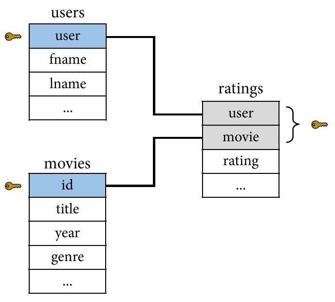
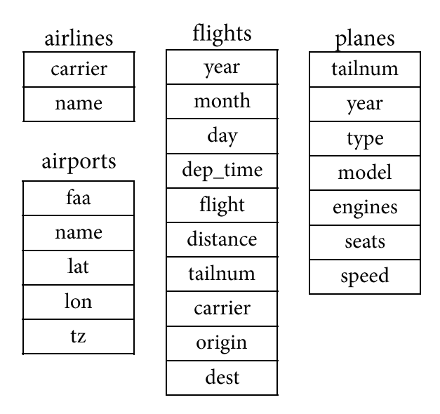
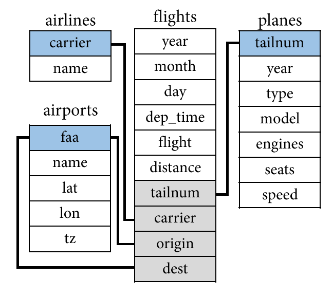
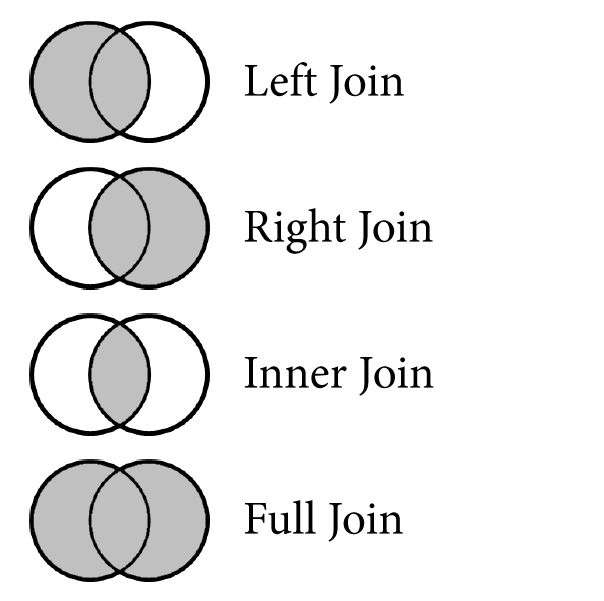

library(tidyverse)
# Create some example data
dat <-
tibble(
id = c("Ax001x01", "Ax002x01", "Bx001x01", "Bx002x01", "Cx001x01", "Cx002x01"),
duration = c("01:16", "01:21", "01:49", "00:34", "00:32", "00:54"),
growth = c("1.6in", "2.6in", "4.1cm", "2.3cm", "3.1in", "2.8in"),
symptoms = c("pain", "pain,irritability", NA, NA, "irritability", "irritability,diarrhea,nausea")
) |>
print()
# SEPARATE
# Separate a column into multiple columns
dat |>
separate_wider_delim(
cols = duration,
delim = ":",
names = c("min", "sec")
)
# Keep the column being separated using remove = FALSE
dat |>
separate_wider_delim(
cols = duration,
delim = ":",
names = c("min", "sec"),
cols_remove = FALSE
)
# The created variables will be strings but we can use parse_number()
dat |>
separate_wider_delim(
cols = duration,
delim = ":",
names = c("min", "sec"),
cols_remove = FALSE
) |>
mutate(across(.cols = c(min, sec), .fns = parse_number))
# This also works with more than two "into" columns
dat |>
separate_wider_delim(
cols = id,
delim = "x",
names = c("group", "subject", "time")
)
# Separate by position rather than by delimiter
dat |>
separate_wider_position(
cols = growth,
widths = c(growth_value = 3, growth_units = 2)
)
# We can specify what to do with too few (or too many) pieces
dat |>
separate_wider_delim(
cols = symptoms,
delim = ",",
names = c("symptom1", "symptom2", "symptom3"),
too_few = "align_start"
)
dat |>
separate_wider_delim(
cols = symptoms,
delim = ",",
names = c("symptom1", "symptom2", "symptom3"),
too_few = "align_end"
)
# Or, in this case, we can instead separate longer (into rows)
dat |>
separate_longer_delim(
cols = symptoms,
delim = ","
)
# UNITE
mpg2 <-
mpg |>
select(manufacturer, model, year, hwy, cty) |>
print()
# Unite multiple columns into one string
mpg2 |>
unite(
col = "full_name",
manufacturer, model, year,
sep = " "
)
mpg2 |>
unite(
col = "fuel_eff",
cty, hwy,
sep = " / "
)
# Or use mutate() and str_glue() to get a bit more control
# You can "glue" in a string by wrapping its name in {}
mpg2 |>
mutate(
full_name = str_glue("{manufacturer} {model} ({year})"),
full_name = str_to_title(full_name),
fuel_eff = str_glue("mpg: {cty} city / {hwy} highway")
)Intermediate R
for Social Scientists
Workshop Day 3A | 2023-06-07
Jeffrey M. Girard | Pitt Methods

Separate and Unite
Separate and Unite
Remember, we want to store one value per cell
So we need to split up cells that violate this
We do this using the
separate_*()functionsWe can separate using delimiters or by position
We may sometimes want to do the opposite
To merge many variables into one, we can use…
The
unite()function orstr_glue()
Separate and Unite Live Coding
Pivot Longer
Pivot Longer
- Tidy data can have many different shapes
- Long data is useful for MLM and most plots
- Wide data is useful for SEM and other plots
- The
pivot_*()functions reshape tibblespivot_longer()adds rows from columns
- For
pivot_longer(), we need…colsto collapsenames_tois where cols names govalues_tois where cols values go
Pivot Longer Live Coding
# Create example data in wide format
gradebook <-
tibble(
student = 1:10,
test1 = round(rnorm(10, 81, 10)),
test2 = round(rnorm(10, 75, 8)),
test3 = round(rnorm(10, 77, 7)),
test4 = round(rnorm(10, 80, 5)),
test5 = round(rnorm(10, 79, 9))
) |>
print()
# This format usually won't work for multilevel modeling or ggplot2
# ggplot(gradebook, aes(x = ???, y = ???))
# To fix it, we can reshape it (pivot it) to long format
gradebook2 <-
gradebook |>
pivot_longer(
cols = c(test1, test2, test3, test4, test5),
names_to = "test",
values_to = "grade"
) |>
print()
# Now this is much easier to work with
ggplot(gradebook2, aes(x = test, y = grade, group = student)) +
geom_line() +
geom_point()
# Use selection helpers to select columns
gradebook |>
pivot_longer(
cols = starts_with("test"),
names_to = "test",
values_to = "grade"
) |>
print()
# Automatically remove the name prefix and (optionally) convert to numeric
gradebook |>
pivot_longer(
cols = starts_with("test"),
names_to = "test",
values_to = "grade",
names_prefix = "test",
names_transform = parse_number
) |>
print()
# How to select columns with numerical names: wrap them in `backticks`
table4a
table4a |>
pivot_longer(
cols = c(1999, 2000),
names_to = "year",
values_to = "cases"
) # error
table4a |>
pivot_longer(
cols = c(`1999`, `2000`),
names_to = "year",
values_to = "cases"
)Pivot Wider
Pivot Wider
- Tidy data can have many different shapes
- Long data is useful for MLM and most plots
- Wide data is useful for SEM and other plots
- The
pivot_*()functions reshape tibblespivot_wider()adds columns from rows
- For
pivot_wider(), we need…names_fromis where names come fromvalues_fromis where values come from
Pivot Wider Live Coding
# Example data in long format
diary_data <-
tibble(
participant = rep(1:3, each = 10, times = 2),
day = rep(1:10, each = 2, times = 3),
scale = rep(c("mood", "sleep"), times = 10*3),
score = round(rnorm(n = 60), digits = 1)
) |>
print()
# This format works well for some purposes
ggplot(diary_data, aes(x = scale, y = score)) + geom_boxplot()
# But not others!
# ggplot(diary_data, aes(x = mood???, y = sleep???))
# To fix this, we can reshape (pivot) it to wide format
diary_data |>
pivot_wider(
names_from = "scale",
values_from = "score"
)
# Now we can plot this relationship as desired
diary_data |>
pivot_wider(
names_from = "scale",
values_from = "score"
) |>
ggplot(aes(x = mood, y = sleep)) + geom_point()
# We can also add a prefix to each name
diary_data
diary_data |>
pivot_wider(
names_from = "day",
values_from = "score"
)
diary_data |>
pivot_wider(
names_from = "day",
values_from = "score",
names_prefix = "day_"
)
# We can also pivot on multiple columns
diary_data |>
pivot_wider(
names_from = c("day", "scale"),
values_from = "score"
)
# We can change the way the new names are formed (e.g., with prefix and sep)
diary_data |>
pivot_wider(
names_from = c("day", "scale"),
values_from = "score",
names_prefix = "day",
names_sep = "."
)
# Example data
records <-
tibble(
fname = rep(c("John", "Alice", "Buster", "John", "Zenia"), each = 2),
var = rep(c("grad_year", "cum_gpa"), times = 5),
val = c(1990, 3.01, 1993, 3.32, 1997, 2.09, 1994, 3.28, 1991, 2.64)
) |>
print()
# If the pivoting results in rows that aren't unique, it will nest them
records |>
pivot_wider(
names_from = "var",
values_from = "val"
)
# Get around this by making your rows unique!
records |>
mutate(linitial = rep(c("A", "S", "K", "Z", "I"), each = 2)) |>
pivot_wider(
names_from = var,
values_from = val
)Combining Tibbles
Combining Tibbles
- If two tibbles or data files have (many of) the same columns, then we can combine them into one
- We can give
bind_rows()many tibbles as arguments
- We can also give
read_csv()a vector of multiple file names
Combining Tibbles Live Coding
## Load tidyverse package (needed for bind_rows and read_csv)
library(tidyverse)
## Create some example tibbles to combine
classA <- tibble(
name = c("Ann", "Bob", "Charlie"),
age = c(19, 23, 21)
)
classB <- tibble(
name = c("Dave", "Evie"),
age = c(20, 29)
)
## Bind together without any id variable
merged <- bind_rows(classA, classB)
merged
## Bind together with a numeric id variable (from argument order)
merged2 <- bind_rows(classA, classB, .id = "class")
merged2
## Bind together by a string id variable (from argument names)
merged3 <- bind_rows(A = data1, B = data2, .id = "class")
merged3
## Create another tibble with partially overlapping columns
classC <- tibble(
name = c("Freda", "George"),
gender = c("Girl", "Boy")
)
merged4 <- bind_rows(classA, classC)
merged4
## Read in multiple files with the same format
### I have made a subfolder in called "data" that has three CSV files in it
d1 <- read_csv("data/pid_001.csv")
d2 <- read_csv("data/pid_002.csv")
d3 <- read_csv("data/pid_003.csv")
d1
d2
d3
### Accomplish this using bind_rows
dall <- bind_rows(d1, d2, d3, .id = "file")
dall
### Or, do so using read_csv directly
dall2 <- read_csv(
c("data/pid_001.csv", "data/pid_002.csv", "data/pid_003.csv")
)
dall2
dall3 <- read_csv(
c("data/pid_001.csv", "data/pid_002.csv", "data/pid_003.csv"),
id = "file"
)
dall3
### Have R create the vector of file names for you
files <- list.files(
path = "data",
pattern = ".csv",
full.names = TRUE
)
files
dall4 <- read_csv(files, id = "file")
dall4Relational Data
Relational Data
- A set of inter-related tables is called a relational database (RDB)
ratings
| user | movie | rating |
|---|---|---|
| sing.it.sam | 1 | ★☆☆☆☆ |
| sing.it.sam | 2 | ★★★★★ |
| macattack | 1 | ★★★★☆ |
| macattack | 2 | ★★☆☆☆ |
| inzain99 | 1 | ★★★☆☆ |
| inzain99 | 2 | ★★☆☆☆ |
users
| user | fname | lname |
|---|---|---|
| sing.it.sam | Sam | Jones |
| macattack | Alex | Mackey |
| inzain99 | Zain | Baker |
movies
| id | title | year | genre |
|---|---|---|---|
| 1 | John Wick 2 | 2017 | Action |
| 2 | Frozen II | 2019 | Family |
Relational Data
- To join the tables into one (as below), we need to know their connections
| user | fname | lname | movie | title | year | genre | rating |
|---|---|---|---|---|---|---|---|
| sing.it.sam | Sam | Jones | 1 | John Wick 2 | 2017 | Action | ★☆☆☆☆ |
| sing.it.sam | Sam | Jones | 2 | Frozen II | 2019 | Family | ★★★★★ |
| macattack | Alex | Mackey | 1 | John Wick 2 | 2017 | Action | ★★★★☆ |
| macattack | Alex | Mackey | 2 | Frozen II | 2019 | Family | ★★☆☆☆ |
| inzain99 | Zain | Baker | 1 | John Wick 2 | 2017 | Action | ★★★☆☆ |
| inzain99 | Zain | Baker | 2 | Frozen II | 2019 | Family | ★★☆☆☆ |
Relational Data
Relational Data
- Data is relational when one observation references another observation
- Each observation needs to be uniquely identified by one or more variables
- These variables are called “keys”
- Natural keys are meaningful
- e.g.,
users$user
- e.g.,
- Surrogate keys are meaningless
- e.g.,
movies$id
- e.g.,
- The ratings table has a double-key

Relational Data
Relational Data
- Let’s try to guess the connections for the {nycflights13} package’s tables.


Basic Join Types
Basic Join Types
- The basic joins handle non-overlapping/missing observations differently
movies
| movie | year |
|---|---|
| 1 | 2020 |
| 2 | 2003 |
| 3 | 2019 |
| 4 | 2006 |
| 5 | 2003 |
| 6 | 2002 |
avg_ratings
| movie | average |
|---|---|
| 2 | 2.2 |
| 3 | 8.0 |
| 4 | 6.7 |
| 5 | 8.7 |
| 6 | 3.5 |
| 7 | 7.5 |

Left Join
- Left join includes all rows in [left]; those missing in [right] get NA
movies
| movie | year |
|---|---|
| 1 | 2020 |
| 2 | 2003 |
| 3 | 2019 |
| 4 | 2006 |
| 5 | 2003 |
| 6 | 2002 |
avg_ratings
| movie | average |
|---|---|
| 2 | 2.2 |
| 3 | 8.0 |
| 4 | 6.7 |
| 5 | 8.7 |
| 6 | 3.5 |
| 7 | 7.5 |
Left Join (movies, avg_ratings)
| movie | year | average |
|---|---|---|
| 1 | 2020 | NA |
| 2 | 2003 | 2.2 |
| 3 | 2019 | 8.0 |
| 4 | 2006 | 6.7 |
| 5 | 2003 | 8.7 |
| 6 | 2002 | 3.5 |
Right Join
- Right join includes all rows in [right]; those missing in [left] get NA
movies
| movie | year |
|---|---|
| 1 | 2020 |
| 2 | 2003 |
| 3 | 2019 |
| 4 | 2006 |
| 5 | 2003 |
| 6 | 2002 |
avg_ratings
| movie | average |
|---|---|
| 2 | 2.2 |
| 3 | 8.0 |
| 4 | 6.7 |
| 5 | 8.7 |
| 6 | 3.5 |
| 7 | 7.5 |
Right Join (movies, avg_ratings)
| movie | year | average |
|---|---|---|
| 2 | 2003 | 2.2 |
| 3 | 2019 | 8.0 |
| 4 | 2006 | 6.7 |
| 5 | 2003 | 8.7 |
| 6 | 2002 | 3.5 |
| 7 | NA | 7.5 |
Inner Join
- Inner join includes all rows in both [left] and [right]; no new NAs
movies
| movie | year |
|---|---|
| 1 | 2020 |
| 2 | 2003 |
| 3 | 2019 |
| 4 | 2006 |
| 5 | 2003 |
| 6 | 2002 |
avg_ratings
| movie | average |
|---|---|
| 2 | 2.2 |
| 3 | 8.0 |
| 4 | 6.7 |
| 5 | 8.7 |
| 6 | 3.5 |
| 7 | 7.5 |
Inner Join (movies, avg_ratings)
| movie | year | average |
|---|---|---|
| 2 | 2003 | 2.2 |
| 3 | 2019 | 8.0 |
| 4 | 2006 | 6.7 |
| 5 | 2003 | 8.7 |
| 6 | 2002 | 3.5 |
Full Join
- Full join includes all rows in either [left] opr [right]; missings as NAs
movies
| movie | year |
|---|---|
| 1 | 2020 |
| 2 | 2003 |
| 3 | 2019 |
| 4 | 2006 |
| 5 | 2003 |
| 6 | 2002 |
avg_ratings
| movie | average |
|---|---|
| 2 | 2.2 |
| 3 | 8.0 |
| 4 | 6.7 |
| 5 | 8.7 |
| 6 | 3.5 |
| 7 | 7.5 |
Full Join (movies, avg_ratings)
| movie | year | average |
|---|---|---|
| 1 | 2020 | NA |
| 2 | 2003 | 2.2 |
| 3 | 2019 | 8.0 |
| 4 | 2006 | 6.7 |
| 5 | 2003 | 8.7 |
| 6 | 2002 | 3.5 |
| 7 | NA | 7.5 |
Basic Joins Live Coding
# Load and examine
library(nycflights13)
flights
airlines
airports
planes
# Select a subset of columns to make it easier to see (not necessary to work)
flights2 <-
flights |>
select(year, month, day, hour, origin, dest, tailnum, carrier) |>
print()
# Add information to flights2 about each carrier from airlines
flights2 |>
left_join(airlines, by = "carrier")
# If the key variables are named differently, we can give "by" a named vector
# The order should be c(x = y) where x is the first table and y is the second
flights2 |>
left_join(airports, by = c("origin" = "faa"))
# Add information to flights2 about each tailnum from planes
flights2 |>
left_join(planes, by = "tailnum")
# Note the following about the output
# (1) both tables had a year variable, so it added .x and .y to distinguish them
# (2) if flights2 had a tailnum not in planes, all joined variables will be NA
# We can change the suffix it adds to duplicate variables as a two-element vector
flights2 |>
left_join(planes, by = "tailnum", suffix = c("_flight", "_plane"))
# Confirm that there is no record in planes for tailnum N3ALAA
planes |>
filter(tailnum == "N3ALAA")
# To only return rows that have a match in both tables use inner_join()
flights2 |>
inner_join(planes, by = "tailnum")
# Note that the observation for tailnum N3ALAA is gone and there are fewer rows
# To return rows that have a match in either table use full_join()
flights2 |>
full_join(planes, by = "tailnum")
# To return all rows in planes and all flights that match them, use right_join()
flights2 |>
right_join(planes, by = "tailnum")